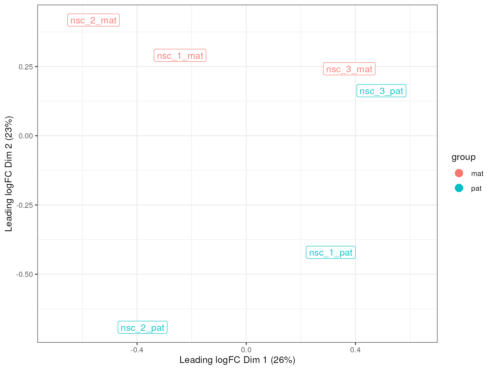
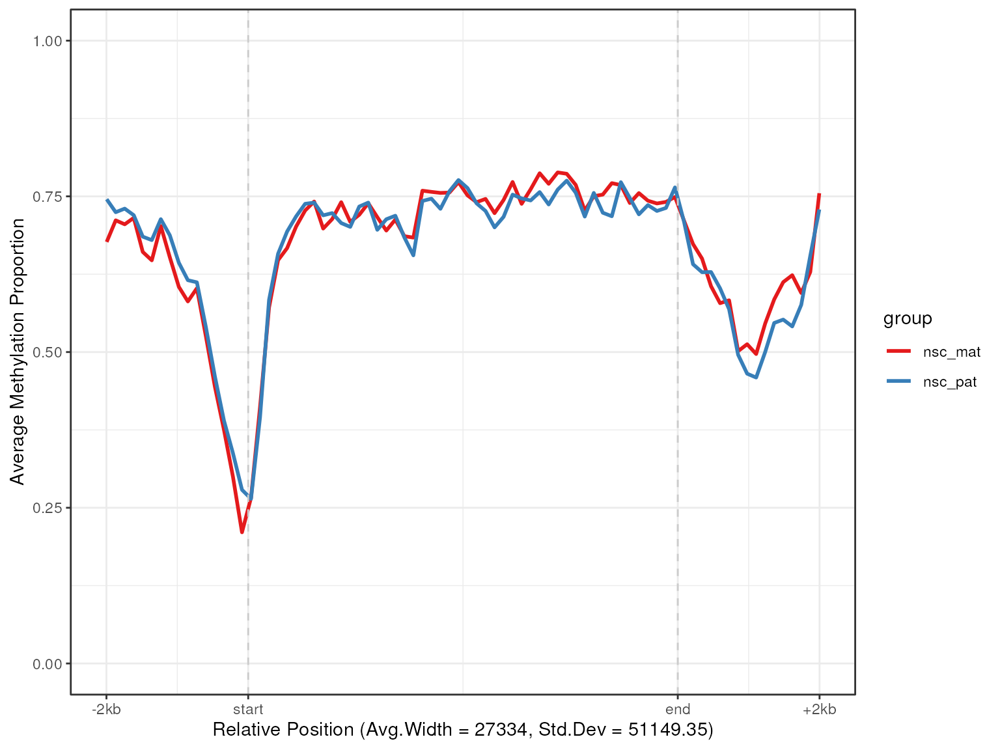
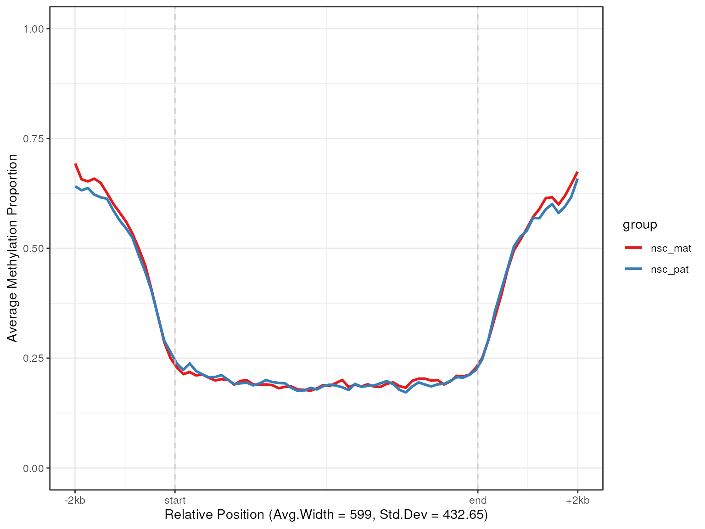
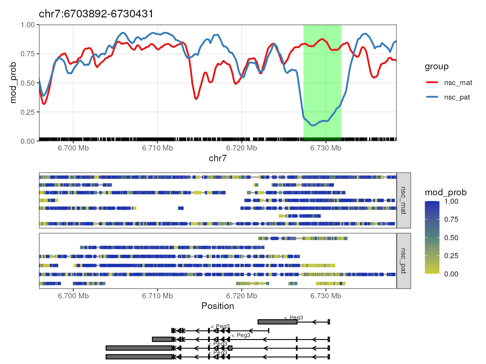
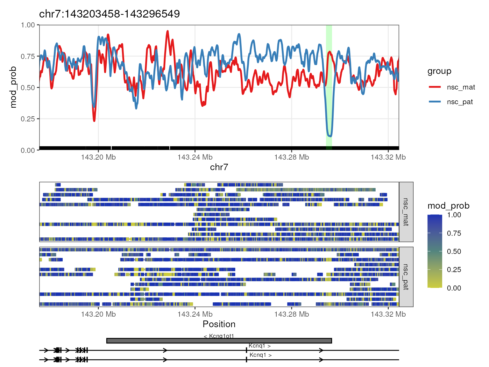
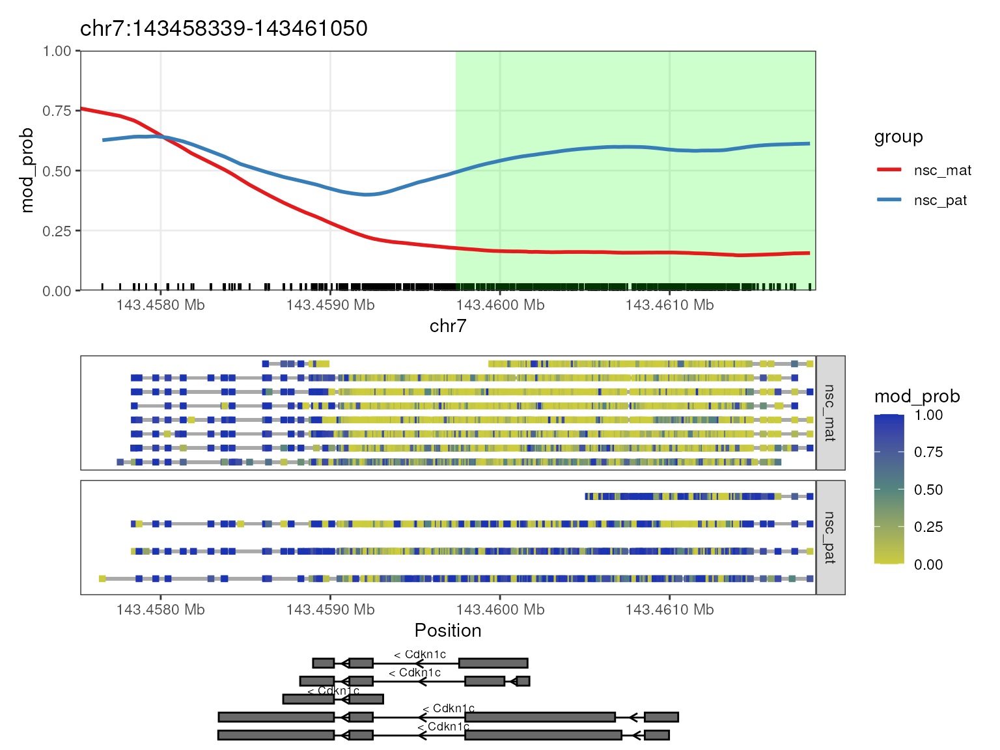

vignettes/workflow.rmd
workflow.rmdDNA methylation is a key epigenetic regulator of gene expression in mammals, it involves the addition of a methyl group to the 5’ position of cytosine residues in CpG dinucleotides. The methylation state of CpG sites can be influenced by a variety of factors, including environmental exposures, aging, and disease; it plays a crucial role in the regulation of gene expression, genomic imprinting, and X-chromosome inactivation. The methylation status of CpG sites can be measured using a variety of methods, including bisulfite sequencing, methylation arrays, and nanopore sequencing.
Oxford Nanopore Technologies (ONT) provides a commercial platform for nanopore long-read sequencing, a third-generation sequencing technology that produces high-throughput long-read sequencing data. By using direct-DNA sequencing without PCR amplification, ONT sequencing is able to sequence DNA molecules with all their modifications intact, including DNA methylation. This is in contrast to previous sequencing technologies which required bisulfite conversion to detect DNA methylation, which has more complex chemical treatments that may introduce bias.
In this workflow, we will demonstrate how to use the
NanoMethViz package to analyze methylation data generated
by ONT long-read sequencing. The NanoMethViz package
provides a suite of tools for analyzing and visualizing methylation data
generated by ONT sequencing, including functions for loading in
methylation data, visualizing methylation patterns, and exporting data
for identifying differentially methylated regions (DMRs) using other
Bioconductor software such as bsseq, DSS, dmrseq and edgeR.
Before we move on, if you do not already have the input data, please
download it by running the code below. This will download the modbam
files that will serve as the raw data for this workshop. The data will
be stored in the input directory.
if (!dir.exists("input")) {
options(timeout = 600)
download.file("https://zenodo.org/records/12747551/files/input.tar.gz?download=1", "input.tar.gz")
utils::untar("input.tar.gz")
file.remove("input.tar.gz")
}## [1] TRUEThe data we will be working with comes from the neural stem cells of triplicate female mice. The mice were F1 crosses between an Xist KO 129S1 female and CAST male, the resulting offspring have sufficiently different parental chromosomes to allow effective genome-wide haplotyping to distinguish the parent-of-origin for long-reads, allowing for the identification of genes that are imprinted or strain-specific. The Xist KO of the maternal genome also guarantees that X-inactivation takes place on the paternal X chromosome, allowing for the study of X-inactivation. Using Oxford Nanopore Technology’s long-read direct DNA sequencing platform allows for DNA modification information to be captured and here we use it to study 5mC methylation in the mouse genome. For this workshop we will only use a subset of the data focusing on chromosome 7.
modBAM files are BAM files containing reads with additional tags on
each read storing information about methylation probabilities at sites
of interest, this is the currently preferred output of Dorado, the
primary methylation caller offered by ONT. To use this data in
NanoMethViz we must construct an object of the
ModBamResults class. The ModBamResults class
is a container for storing methylation data from multiple samples, along
with sample annotation and exon annotation. To create this object we
need to provide paths to the modBAM files, a sample table, and
optionally exon annotation.
# List the modBAM files by searching for files with the .bam extension in the input directory
bam_files <- dir("input", pattern = "*bam$", full.names = TRUE)
bam_files## [1] "input/nsc_1_mat.bam" "input/nsc_1_pat.bam" "input/nsc_2_mat.bam"
## [4] "input/nsc_2_pat.bam" "input/nsc_3_mat.bam" "input/nsc_3_pat.bam"The samples need to be annotated with information for
NanoMethViz to use in aggregating data within experimental
groups. The sample table must contain sample and
group columns with optional additional columns for further
annotation. The rows of this table must match the order of the input
files. The group column is generally the default grouping
column used in the NanoMethViz package. In this example, we
have grouped our data by haplotype.
samples <- read_tsv("input/sample_anno.tsv", show_col_types = FALSE)
samples## # A tibble: 6 × 4
## sample group tissue haplotype
## <chr> <chr> <chr> <chr>
## 1 nsc_1_mat nsc_mat nsc mat
## 2 nsc_1_pat nsc_pat nsc pat
## 3 nsc_2_mat nsc_mat nsc mat
## 4 nsc_2_pat nsc_pat nsc pat
## 5 nsc_3_mat nsc_mat nsc mat
## 6 nsc_3_pat nsc_pat nsc patOptionally we can add exon annotation to the object to generate
tracks for gene annotation when plotting genomic regions/genes. The exon
annotation must be a data.frame with columns
gene_id, chr, strand,
start, end, transcript_id, and
symbol. A number of helper functions are provided to
retrieve exon annotations in the correct format for human (hg19, hg38)
and mouse (mm10, GRCm39). In this example, we will use the
get_exons_mm10 function to retrieve exon annotations for
the mouse genome (mm10) and filter for chromosome 7.
exon_anno <- get_exons_mm10() %>%
filter(chr == "chr7")
exon_anno## # A tibble: 60,146 × 7
## gene_id chr strand start end transcript_id symbol
## <chr> <chr> <chr> <int> <int> <int> <chr>
## 1 100009609 chr7 - 84935565 84941088 60883 Vmn2r65
## 2 100009609 chr7 - 84943141 84943264 60883 Vmn2r65
## 3 100009609 chr7 - 84943504 84943722 60883 Vmn2r65
## 4 100009609 chr7 - 84946200 84947000 60883 Vmn2r65
## 5 100009609 chr7 - 84947372 84947651 60883 Vmn2r65
## 6 100009609 chr7 - 84963816 84964115 60883 Vmn2r65
## 7 100009609 chr7 - 84935565 84941088 60884 Vmn2r65
## 8 100009609 chr7 - 84943141 84943264 60884 Vmn2r65
## 9 100009609 chr7 - 84943504 84943722 60884 Vmn2r65
## 10 100009609 chr7 - 84946200 84947000 60884 Vmn2r65
## # ℹ 60,136 more rowsOnce we have created the ModBamResult object, we can use
the plot_gene() function to visualize the methylation
patterns of a gene of interest. In this example, we will plot the
methylation patterns of the Peg3 gene on chromosome 7 which is
known to be imprinted in mice. The plot contains a smoothed trend line
of the group-aggregated methylation levels across the gene body, along
with a heatmap showing the methylation levels of individual CpG sites in
each sample, and a track showing the isoforms of the gene if exon
annotation is provided.
mbr <- ModBamResult(
methy = ModBamFiles(
paths = bam_files,
samples = samples$sample
),
samples = samples,
exons = exon_anno,
mod_code = "m"
)
plot_gene(mbr, "Peg3")The Peg3 (paternally expressed gene 3) gene is known to be imprinted in mice, with the paternal allele being expressed and the maternal allele being silenced. In the plot, we see that there is a strong demthylation pattern on the paternal allele near the transcription start site (TSS) of the gene, allowing the gene to be expressed. The maternal allele is hypermethylated near the TSS, silencing the gene. This is a typical methylation pattern for an imprinted gene, and consistent with paternal expression of Peg3.
While it is possible to use modBAM files to analyse specific regions
of interest, genome-wide analysis requires the data to be in a
tabix-indexed TSV file as it is easier to parse at scale. We can convert
the modBAM files to a tabix-indexed TSV file using the
modbam_to_tabix() function. This function will create a
tabix-indexed TSV file containing the methylation data from the modBAM
files. This file can then be used as input to the
NanoMethViz functions that require sorted genomic data. In
this example, we will convert the ModBamResult object to a
tabix-indexed TSV file and save it to the data directory.
We will use a pre-generated file in the interest of time, but you can
run the code below to generate the file.
dir.create("data", showWarnings = FALSE)
if (!file.exists("data/methy.tsv.bgz")) {
modbam_to_tabix(mbr, "data/methy.tsv.bgz")
}Once we have the tabix-indexed TSV file, we can create a
NanoMethResult object using the NanoMethResult
function. The NanoMethResult object contains the same
information as the ModBamResult object but with the
methylation data stored in a tabix-indexed TSV file. To create this
object we need to provide paths to the tabix-indexed TSV file, along
with the accompanying information we generated before.
nmr <- NanoMethResult(
methy = "data/methy.tsv.bgz",
samples = samples,
exons = exon_anno
)The NanoMethResult object behaves in the same way as
ModBamResult for any plotting functions. For example we can
use plot_gene() to visualize the methylation patterns of
the Peg3 gene in exactly the same way but replacing the
ModBamResult object with the NanoMethResult
object. We should see the exact same plot as before.
plot_gene(nmr, "Peg3")NanoMethViz is primarily designed for visualising
methylation data, in order to perform differential methylation analysis
we can use other Bioconductor packages that implement sophisticated
statistical procedures, such as dmrseq. To use the
dmrseq function to identify DMRs between the two groups in
our data, the dmrseq function requires a BSseq
object as input, so we convert the NanoMethResult object to
a BSseq object using the methy_to_bsseq
function. Additionally we filter out regions with low coverage which are
generally not informative for differential methylation analysis, here we
remove any sites that are zero in all of the samples of either
experimental group. The BSSeq object stores the methylation
data as two matrices, the methylation matrix and the coverage matrix,
with the option to store additional information such as sample
annotation and genomic regions.
This conversion process usually takes some time, so we will load a
pre-generated BSSeq object, the code used to generate the
object is provided below.
if (!file.exists("data/bss.rds")) {
bss <- methy_to_bsseq(nmr)
saveRDS(bss, "data/bss.rds")
} else {
bss <- readRDS("data/bss.rds")
}
pat_cols <- str_detect(colnames(getCoverage(bss)), "pat")
mat_cols <- str_detect(colnames(getCoverage(bss)), "mat")
low_cov <- (rowSums(getCoverage(bss)[, pat_cols] == 0) == 3) |
(rowSums(getCoverage(bss)[, mat_cols] == 0) == 3)
table(low_cov)/sum(table(low_cov))## low_cov
## FALSE TRUE
## 0.2853227 0.7146773
bss <- bss[!low_cov, ]Using the BSSeq object we are able to create a
multi-dimensional scaling (MDS) plot to visualize the methylation
patterns of the samples, a method commonly used in differential gene
expression analysis. Since BSSeq objects store the
methylation data as two matrices, the methylation matrix and the
coverage matrix, we need to convert the BSSeq object such
that each CpG site from each sample is represented by a single value in
a matrix. This can be done using the
bsseq_to_log_methy_ratio function which converts the
BSSeq object to a matrix of the log of the methylation
ratio with a small count added to prevent division by zero. The
plot_mds function can then be used to create an MDS plot of
the samples using the log methylation ratio matrix as input. The samples
are colored by group, in this case, maternal and paternal.
Because the number of CpG sites is large, we accumulate the
methylation data over genes to both reduce the size of the data but also
produce a more stable measure of methylation. This is done by providing
the regions = exons_to_genes(exons(nmr)) argument to
bsseq_to_log_methy_ratio which will aggregate the
methylation data over genes. Without the argument, the function will use
individual CpG sites. After the data is aggregated,
plot_mds uses only the top 500 most variable features to
create the MDS plot.
cgi_anno <- get_cgi_mm10() %>%
filter(chr == "chr7")
cgi_anno## # A tibble: 1,193 × 14
## bin chr start end gene_id length cpgNum gcNum perCpg perGc obsExp
## <dbl> <chr> <dbl> <dbl> <chr> <dbl> <dbl> <dbl> <dbl> <dbl> <dbl>
## 1 609 chr7 3181031 3181267 CpG: 22 236 22 147 18.6 62.3 1
## 2 610 chr7 3303442 3303817 CpG: 28 375 28 249 14.9 66.4 0.69
## 3 610 chr7 3366695 3366942 CpG: 27 247 27 152 21.9 61.5 1.22
## 4 611 chr7 3411983 3412269 CpG: 26 286 26 188 18.2 65.7 0.84
## 5 611 chr7 3414874 3415855 CpG: 87 981 87 518 17.7 52.8 1.28
## 6 611 chr7 3423522 3423834 CpG: 28 312 28 215 17.9 68.9 0.87
## 7 612 chr7 3617298 3617534 CpG: 17 236 17 146 14.4 61.9 0.76
## 8 612 chr7 3629691 3630056 CpG: 32 365 32 195 17.5 53.4 1.24
## 9 612 chr7 3645002 3645963 CpG: 106 961 106 652 22.1 67.8 0.96
## 10 612 chr7 3665238 3665517 CpG: 27 279 27 184 19.4 65.9 0.93
## # ℹ 1,183 more rows
## # ℹ 3 more variables: transcript_id <chr>, strand <chr>, symbol <chr>
lmr <- bsseq_to_log_methy_ratio(
bss,
regions = cgi_anno
)
groups <- colnames(lmr) %>%
str_extract("mat|pat")
plot_mds(lmr, groups = groups)
From this MDS we see that there is not a clear separation between the maternal and paternal groups, suggesting that there is no strong global difference in methylation patterns between the two groups, and that we don’t expect to find many differentially methylated regions between the two groups. This is mostly expected as imprinted genes are rare in mice and most genes in the autosomes should behave similarly between the two parental alleles.
It is often informative to aggregate methylation data over a class of
features to identify broad patterns of methylation across the features.
This can help establish overall differences in methylation patterns
between groups in a class of features such as genes, CpG islands, or
enhancers. The NanoMethViz package provides a functions for
aggregating methylation data across genomic regions. The
plot_agg_regions() function can be used to visualize the
aggregated methylation data across a set of features of interest defined
by a table of coordinates. For example we may want to investigate the
methylation patterns of a set of genes on chromosome 7. We can use the
exons_to_genes() helper function to convert exon
annotations already stored in the object to gene annotations and filter
for only chromosome 7 genes. Then, for speed, we can subset 100 regions
and use the plot_agg_regions() function to visualize the
mean methylation profile across those genes. With more time we could use
the full set of genes.
gene_anno <- exons_to_genes(exons(nmr))
plot_agg_regions(nmr, regions = slice_sample(gene_anno, n = 100), group_col = "group")
In this plot we can see that active genes tend to be demethylated near the TSS region and hypermethylated throughout the genebody. This is consistent with the proposed function of methylation in gene regulation, where methylation in promoter region of genes is associated with gene silencing, while transcription of active genes is associated with recruitment of methylating mechanisms to the genebody.
Another class of features of interest are CpG islands, which are
regions of the genome that are rich in CpG dinucleotides. CpG islands
are often associated with gene promoters and are generally unmethylated
in normal cells. We can use the get_cgi_mm10() function to
retrieve CpG island annotations for the mouse genome (mm10) and filter
for chromosome 7. We can then use the plot_agg_regions()
function to visualize the mean methylation profile across CpG islands on
chromosome 7. We expect to see a clear pattern of demethylation over CpG
islands, which tend to be enriched in the promoter regions of genes.
plot_agg_regions(nmr, cgi_anno, group_col = "group")
Another common analysis is to identify differentially methylated regions (DMRs) between the experimental groups. It is generally more informative to identify DMRs rather than individual CpG sites, as DMRs are more likely to be functionally relevant and biologically interpretable. However DMRs are not easy to identify, as it requires the identification of individual significant sites, some determination of whether nearby sites should be aggregated into a region, and a statistical test to determine if the region as a whole is differentially methylated.
The dmrseq package can be used to identify
differentially methylated regions (DMRs) between the two groups in our
data. The dmrseq function from the package requires a
BSseq object as input, along with the name of the covariate
to test for differential methylation. We will test for differential
methylation between the maternal and paternal groups. The
dmrseq function returns a GRanges object
containing the DMRs identified by the function. The GRanges
object contains the genomic coordinates of the DMRs, along with
information about the statistical significance of the DMRs.
There are alternatives to dmrseq for identifying DMRs,
such as bsseq, DSS and edgeR. For
bsseq and DSS the same BSSeq
object can be used as input, while for edgeR the
BSSeq object must be further converted to a
DGEList object using the bsseq_to_edger() or
methy_to_edger() functions. bsseq,
DSS and dmrseq all use a similar approach to
identify DMRs, using a statistical test to compare the methylation
levels between the two groups at each CpG site, followed by a clustering
step to identify regions of the genome with consistent differences in
methylation levels for de novo DMR discovery. While edgeR
requires users to choose the regions to test for differential
methylation, which is reflected by the regions in which they choose to
summarise counts. dmrseq and edgeR are able to
produce p-values for each region while bsseq and
DSS only provide p-values for each CpG site along with an
aggregated area statistic.
pData(bss)$condition <- NanoMethViz::samples(nmr)$group
if (!file.exists("data/regions")) {
regions <- dmrseq(bss, testCovariate = "condition", minNumRegion = 20)
saveRDS(regions, "data/regions.rds")
} else {
regions <- readRDS("data/regions.rds")
}A number of regions will be produced by dmrseq, this
includes regions were aggregated because they contained significant CpG
sites but failed to reach statistical significance at a region level. In
order to make sense of these results, we generally want to associate the
regions to genes. One way to do that is to use the
plyranges object along with the the gene annotation we
already generated. We want to find DMR regions that overlap within a
certain distance of the transcription start site (TSS) of a gene. We use
anchor_5p() and mutate(width = 1) to shrink
the annotation to the TSS site, then we stretch the annotation by 10kb
such that it spans 5kb on either side of the TSS. We then use the
join_overlap_intersect() function to find the DMRs that are
near a gene’s TSS. This will return a GRanges object
containing the DMRs which overlap with the gene TSS regions, and append
information about the gene to the DMRs.
gene_anno_gr <- as_granges(dplyr::rename(gene_anno, seqnames = "chr"))
gene_anno_gr_tss <- gene_anno_gr %>%
anchor_5p() %>%
mutate(width = 1) %>%
stretch(10000)
gene_dmr_overlaps <- join_overlap_intersect(regions, gene_anno_gr_tss)
gene_dmr_overlaps## GRanges object with 868 ranges and 9 metadata columns:
## seqnames ranges strand | L area beta
## <Rle> <IRanges> <Rle> | <integer> <numeric> <numeric>
## [1] chr7 6727308-6731838 * | 157 128.8218 -1.84082
## [2] chr7 6727308-6731838 * | 157 128.8218 -1.84082
## [3] chr7 143294268-143296757 * | 112 92.9051 -1.87215
## [4] chr7 60003279-60005228 * | 60 50.9278 -1.82583
## [5] chr7 60003279-60005228 * | 60 50.9278 -1.82583
## ... ... ... ... . ... ... ...
## [864] chr7 126579062-126580889 * | 27 5.00269 0.0232921
## [865] chr7 126580817-126580889 * | 27 5.00269 0.0232921
## [866] chr7 126579942-126580889 * | 27 5.00269 0.0232921
## [867] chr7 19696925-19697636 * | 23 2.65049 -0.0118438
## [868] chr7 19696925-19697636 * | 23 2.65049 -0.0118438
## stat pval qval index gene_id symbol
## <numeric> <numeric> <numeric> <IRanges> <character> <character>
## [1] -40.6010 5.71657e-05 0.0401684 27111-27267 18616 Peg3
## [2] -40.6010 5.71657e-05 0.0401684 27111-27267 57775 Usp29
## [3] -32.5253 1.14331e-04 0.0401684 910828-910939 63830 Kcnq1ot1
## [4] -20.1018 1.14331e-04 0.0401684 335287-335346 52480 Snhg14
## [5] -20.1018 1.14331e-04 0.0401684 335287-335346 84704 Snurf
## ... ... ... ... ... ... ...
## [864] 0.0925951 0.996341 0.997876 764165-764191 102465641 Mir7059
## [865] 0.0925951 0.996341 0.997876 764165-764191 12752 Cln3
## [866] 0.0925951 0.996341 0.997876 764165-764191 171504 Apobr
## [867] -0.0795915 0.996456 0.997876 81437-81459 11812 Apoc1
## [868] -0.0795915 0.996456 0.997876 81437-81459 11816 Apoe
## -------
## seqinfo: 1 sequence from an unspecified genome; no seqlengthsAfter we identify the DMRs that overlap with the gene TSS regions, we
can filter for the significant DMRs using the qval column.
This is the adjusted p-value for the DMRs, calculated using the
Benjamini-Hochberg procedure to control false-discovery rates for
multiple-testing. We can then select the columns we are interested in,
such as the gene symbol, chromosome, start and end positions of the
DMRs, the strand of the gene, and the q-value of the DMRs.
dmr_regions <- as_tibble(gene_dmr_overlaps) %>%
dplyr::rename(chr = "seqnames")
signif_regions <- dmr_regions %>%
filter(qval < 0.05)
signif_regions %>%
select(symbol, chr, start, end, strand, qval)## # A tibble: 8 × 6
## symbol chr start end strand qval
## <chr> <fct> <int> <int> <fct> <dbl>
## 1 Peg3 chr7 6727308 6731838 * 0.0402
## 2 Usp29 chr7 6727308 6731838 * 0.0402
## 3 Kcnq1ot1 chr7 143294268 143296757 * 0.0402
## 4 Snhg14 chr7 60003279 60005228 * 0.0402
## 5 Snurf chr7 60003279 60005228 * 0.0402
## 6 Mkrn3 chr7 62416953 62423032 * 0.0402
## 7 Cdkn1c chr7 143459739 143462038 * 0.0402
## 8 Peg12 chr7 62461469 62464053 * 0.0402We see that some DMRs overlap with multiple genes, and here we can
plot the methylations of genes Peg3 and Kcnq1ot1 which
are known to be imprinted in mice with the significant regions
highlighted using plot_gene() with the
anno_regions argument set to the regions we identified.
This will highlight the significant regions in the gene plot in a shaded
band. We can then see in both these genes, as required by our filtering
criteria, the differentially methylated regions fall near the TSS of the
genes.
options("NanoMethViz.highlight_col" = "green")
plot_gene(nmr, "Peg3", anno_regions = signif_regions)
plot_gene(nmr, "Kcnq1ot1", anno_regions = signif_regions)
plot_gene(nmr, "Cdkn1c", anno_regions = signif_regions)
We have now successfully used dmrseq to statistically identify differentially methylated regions around known imprinted genes. Additionally we have used that information to visualise the methylation data of the genes associated with the DMRs, and we see that it is primarily near the TSS where differential methylation occurs.
## R version 4.4.1 (2024-06-14)
## Platform: x86_64-pc-linux-gnu
## Running under: Ubuntu 22.04.4 LTS
##
## Matrix products: default
## BLAS: /usr/lib/x86_64-linux-gnu/openblas-pthread/libblas.so.3
## LAPACK: /usr/lib/x86_64-linux-gnu/openblas-pthread/libopenblasp-r0.3.20.so; LAPACK version 3.10.0
##
## locale:
## [1] LC_CTYPE=en_US.UTF-8 LC_NUMERIC=C
## [3] LC_TIME=en_US.UTF-8 LC_COLLATE=en_US.UTF-8
## [5] LC_MONETARY=en_US.UTF-8 LC_MESSAGES=en_US.UTF-8
## [7] LC_PAPER=en_US.UTF-8 LC_NAME=C
## [9] LC_ADDRESS=C LC_TELEPHONE=C
## [11] LC_MEASUREMENT=en_US.UTF-8 LC_IDENTIFICATION=C
##
## time zone: Etc/UTC
## tzcode source: system (glibc)
##
## attached base packages:
## [1] stats4 stats graphics grDevices utils datasets methods
## [8] base
##
## other attached packages:
## [1] NanoMethViz_3.1.5 plyranges_1.25.0
## [3] lubridate_1.9.3 forcats_1.0.0
## [5] stringr_1.5.1 dplyr_1.1.4
## [7] purrr_1.0.2 readr_2.1.5
## [9] tidyr_1.3.1 tibble_3.2.1
## [11] ggplot2_3.5.1 tidyverse_2.0.0
## [13] dmrseq_1.25.0 bsseq_1.41.0
## [15] SummarizedExperiment_1.35.1 Biobase_2.65.0
## [17] MatrixGenerics_1.17.0 matrixStats_1.3.0
## [19] GenomicRanges_1.57.1 GenomeInfoDb_1.41.1
## [21] IRanges_2.39.1 S4Vectors_0.43.1
## [23] BiocGenerics_0.51.0
##
## loaded via a namespace (and not attached):
## [1] splines_4.4.1
## [2] BiocIO_1.15.0
## [3] bitops_1.0-7
## [4] filelock_1.0.3
## [5] R.oo_1.26.0
## [6] XML_3.99-0.17
## [7] lifecycle_1.0.4
## [8] vroom_1.6.5
## [9] lattice_0.22-6
## [10] magrittr_2.0.3
## [11] limma_3.61.4
## [12] sass_0.4.9
## [13] rmarkdown_2.27
## [14] jquerylib_0.1.4
## [15] yaml_2.3.9
## [16] doRNG_1.8.6
## [17] DBI_1.2.3
## [18] RColorBrewer_1.1-3
## [19] abind_1.4-5
## [20] zlibbioc_1.51.1
## [21] R.utils_2.12.3
## [22] RCurl_1.98-1.16
## [23] rappdirs_0.3.3
## [24] cpp11_0.4.7
## [25] GenomeInfoDbData_1.2.12
## [26] irlba_2.3.5.1
## [27] pkgdown_2.1.0
## [28] permute_0.9-7
## [29] DelayedMatrixStats_1.27.2
## [30] codetools_0.2-20
## [31] DelayedArray_0.31.8
## [32] tidyselect_1.2.1
## [33] outliers_0.15
## [34] farver_2.1.2
## [35] UCSC.utils_1.1.0
## [36] ScaledMatrix_1.13.0
## [37] BiocFileCache_2.13.0
## [38] GenomicAlignments_1.41.0
## [39] jsonlite_1.8.8
## [40] annotatr_1.31.0
## [41] e1071_1.7-14
## [42] iterators_1.0.14
## [43] systemfonts_1.1.0
## [44] foreach_1.5.2
## [45] dbscan_1.2-0
## [46] tools_4.4.1
## [47] ragg_1.3.2
## [48] Rcpp_1.0.12
## [49] glue_1.7.0
## [50] SparseArray_1.5.21
## [51] mgcv_1.9-1
## [52] xfun_0.45
## [53] HDF5Array_1.33.3
## [54] withr_3.0.0
## [55] BiocManager_1.30.23
## [56] fastmap_1.2.0
## [57] rhdf5filters_1.17.0
## [58] fansi_1.0.6
## [59] digest_0.6.36
## [60] rsvd_1.0.5
## [61] timechange_0.3.0
## [62] R6_2.5.1
## [63] textshaping_0.4.0
## [64] colorspace_2.1-0
## [65] Cairo_1.6-2
## [66] gtools_3.9.5
## [67] RSQLite_2.3.7
## [68] R.methodsS3_1.8.2
## [69] utf8_1.2.4
## [70] generics_0.1.3
## [71] data.table_1.15.4
## [72] rtracklayer_1.65.0
## [73] class_7.3-22
## [74] httr_1.4.7
## [75] htmlwidgets_1.6.4
## [76] S4Arrays_1.5.4
## [77] org.Mm.eg.db_3.19.1
## [78] regioneR_1.37.0
## [79] pkgconfig_2.0.3
## [80] gtable_0.3.5
## [81] blob_1.2.4
## [82] XVector_0.45.0
## [83] htmltools_0.5.8.1
## [84] scales_1.3.0
## [85] png_0.1-8
## [86] knitr_1.48
## [87] tzdb_0.4.0
## [88] reshape2_1.4.4
## [89] rjson_0.2.21
## [90] nlme_3.1-165
## [91] curl_5.2.1
## [92] bumphunter_1.47.0
## [93] proxy_0.4-27
## [94] cachem_1.1.0
## [95] rhdf5_2.49.0
## [96] BiocVersion_3.20.0
## [97] parallel_4.4.1
## [98] vipor_0.4.7
## [99] AnnotationDbi_1.67.0
## [100] ggrastr_1.0.2
## [101] restfulr_0.0.15
## [102] desc_1.4.3
## [103] pillar_1.9.0
## [104] grid_4.4.1
## [105] vctrs_0.6.5
## [106] BiocSingular_1.21.2
## [107] dbplyr_2.5.0
## [108] beachmat_2.21.4
## [109] beeswarm_0.4.0
## [110] evaluate_0.24.0
## [111] GenomicFeatures_1.57.0
## [112] cli_3.6.3
## [113] locfit_1.5-9.10
## [114] compiler_4.4.1
## [115] Rsamtools_2.21.0
## [116] rlang_1.1.4
## [117] crayon_1.5.3
## [118] rngtools_1.5.2
## [119] labeling_0.4.3
## [120] plyr_1.8.9
## [121] fs_1.6.4
## [122] ggbeeswarm_0.7.2
## [123] TxDb.Mmusculus.UCSC.mm10.knownGene_3.10.0
## [124] stringi_1.8.4
## [125] BiocParallel_1.39.0
## [126] assertthat_0.2.1
## [127] munsell_0.5.1
## [128] Biostrings_2.73.1
## [129] Matrix_1.7-0
## [130] BSgenome_1.73.0
## [131] hms_1.1.3
## [132] patchwork_1.2.0
## [133] sparseMatrixStats_1.17.2
## [134] bit64_4.0.5
## [135] Rhdf5lib_1.27.0
## [136] KEGGREST_1.45.1
## [137] statmod_1.5.0
## [138] highr_0.11
## [139] AnnotationHub_3.13.0
## [140] memoise_2.0.1
## [141] bslib_0.7.0
## [142] bit_4.0.5